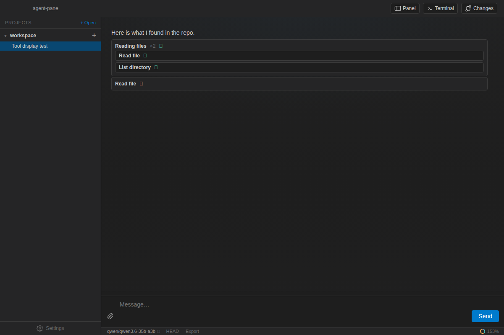

Transparent tool use
Every agent action appears as a human-readable tool card. Related calls group together so a burst of file reads stays compact; expand any group to inspect individual steps.
- Grouped labels like “Reading files ×2”
- Expandable argument details
- Clear error states for failed tools
